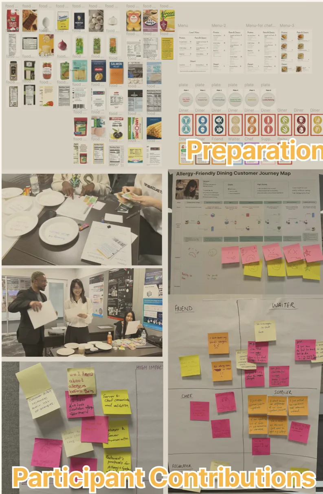
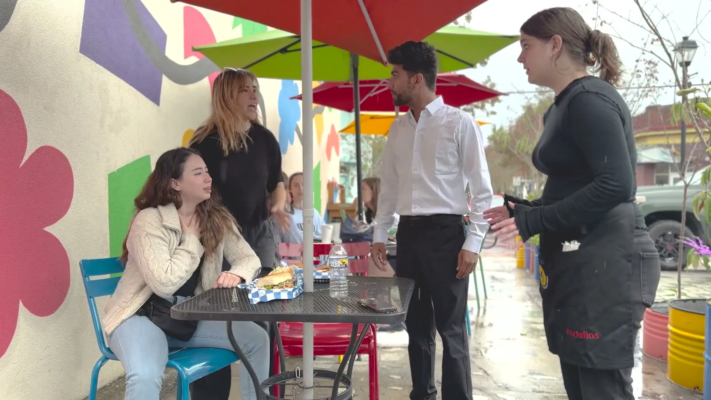
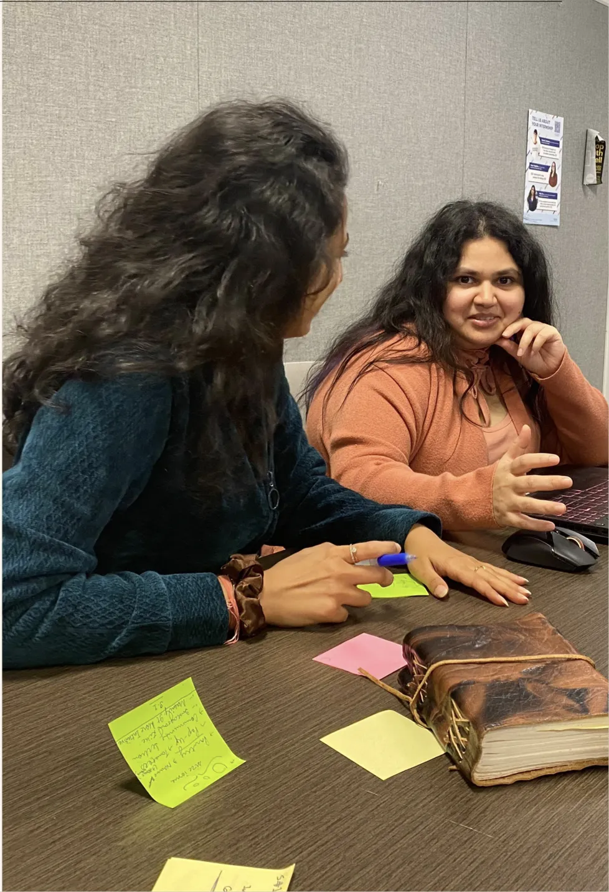
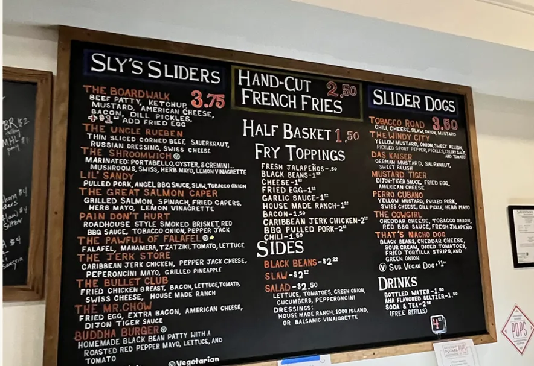
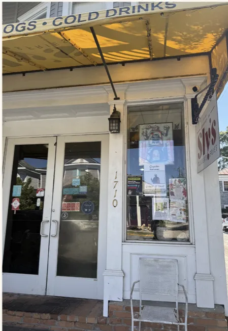
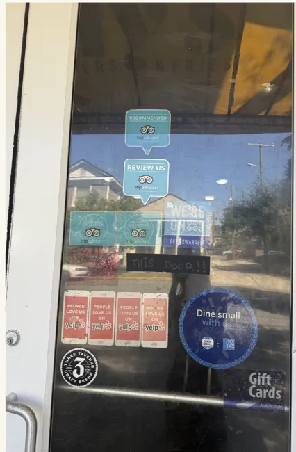
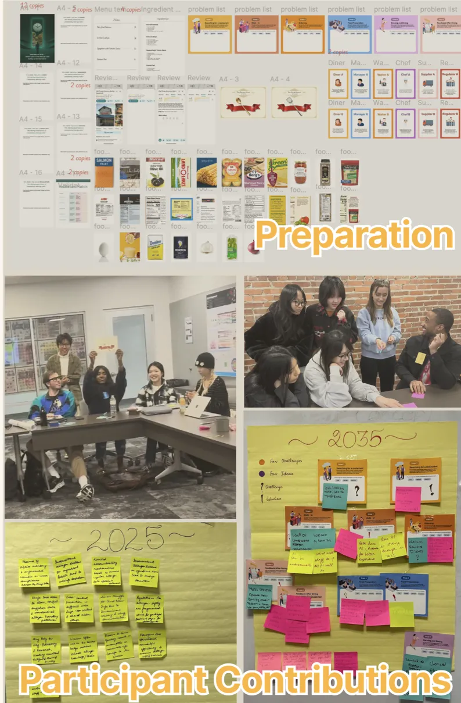
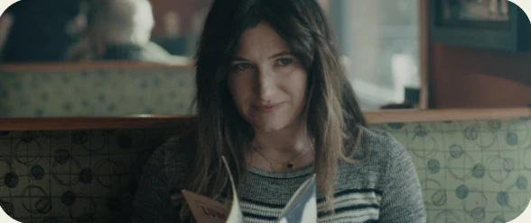
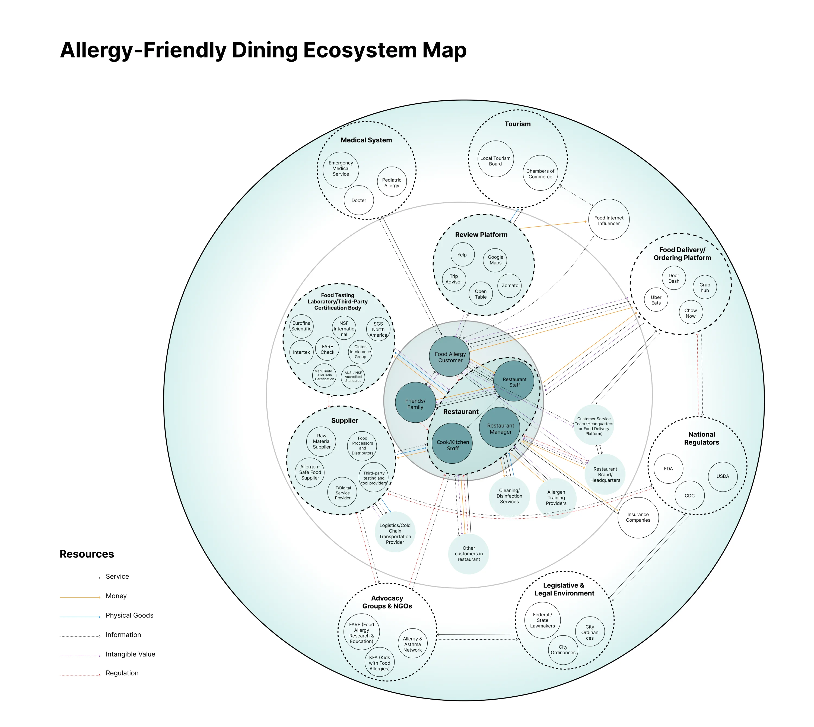

Workshop 1Current-state roleplay
An allergen-card icebreaker, then a restaurant role-play as diners, servers, chefs, suppliers and regulators. Walking the journey showed where communication breaks and trust fails.
Allergy-safe dining, from the menu to the kitchen.
SCROLL
A service design research white paper on why eating out is still a risk for people with food allergies, and how restaurants can turn safety into trust.



Service designer on a four-person team, from desk research and co-creation workshops to the journey map, the infographics and the printed white paper.
Telling the server isn’t enough.
For people with food allergies, every order is a negotiation. They check websites, call ahead and repeat themselves at the table, yet over half of allergic reactions happen even after they disclose their allergy.
FARE, Food Allergy Research & EducationFor someone with food allergies, eating out isn’t just about food. It’s about trust.
From the data, to the dining room.
We reviewed research and industry data from FARE, CDC/EHS-Net, the FDA and Apicbase. Six findings shaped our strategy.
Only 44% of restaurant staff receive allergy training, and over 10% still believe “small amounts” of allergens are safe.
53.9% of reactions happen even after disclosure, through verbal miscommunication between servers and the kitchen.
Only 22% of restaurants provide allergen menus, and nearly 45% lack ingredient lists or recipes.
Diners face anxiety and isolation. Empathy and visible safety cues matter as much as physical safety.
Unlike packaged food, restaurant allergen disclosure isn’t federally mandated, so standards vary by state.
The global allergy-free food market is projected to reach $102.8 billion by 2035.
A short online survey of diners with allergies, caregivers and restaurant staff, to see how each side navigates safety while eating out.
What they want is trust, not luck: clearer menus, better-trained staff and reliable systems.
“Have a clear detailed menu that explains what’s in the food.”
“List out our ingredients and bold allergens. The big issue isn’t popular franchises, it’s the smaller community-run places that haven’t organized allergen warnings.”Survey participants
12 in-depth interviews with people managing allergies at different severity levels, and caregivers who advocate for safe meals on others’ behalf.
Dining out is shaped less by the food than by uncertainty, emotional labour and fragile communication. People apologise for their needs, and moments of safety depend on individual staff, not systems.

An ethnographic study at Sly’s in Savannah, GA, watching real-time service and the kitchen workflow.




Workshop 1An allergen-card icebreaker, then a restaurant role-play as diners, servers, chefs, suppliers and regulators. Walking the journey showed where communication breaks and trust fails.

Workshop 2“Welcome to 2035.” With a guided booklet, each role wrote their ideal dining journey, then debated and refined it in a challenge round. Safety, they agreed, has to live in systems, not people.
Meet Agnes, who just wants dinner with friends.
Agnes Harkness
Single midlife woman in Savannah with serious multiple allergies.

“I just want to eat safely without calling five restaurants first.”
Tomorrow Agnes is hosting a small dinner with friends. They want to try somewhere new, but with her allergies, every choice has to be made carefully.
We followed her through seven stages, from the first pang of hunger to the review she leaves afterwards, mapping her jobs to be done, needs and emotions at each one. Her mood dips hardest while searching, walking in and ordering, where information is missing and staff knowledge is a gamble. Scoring importance against satisfaction showed where to act first.

Many players, shared responsibility.
Food allergy safety doesn’t fail in isolation, it fails in connection. Suppliers, restaurants, platforms, regulators and diners each carry part of the responsibility, yet no one can guarantee safety alone.
The system is complex, fragmented and unevenly informed, leaving gaps exactly where trust, data and accountability should flow.

Diners, friends and family, chefs, servers and managers decide, in the moment, whether the meal is safe.
Suppliers, training providers, review platforms and certifiers make sure information is conveyed, applied and tracked.
Regulators, legal frameworks and advocacy groups set the rules everyone else works within.
Trust cannot rely on individual goodwill; it must be embedded within the system itself.
Supplier labels don’t match, menus lag behind the kitchen, and spoken reminders replace records. A single miscommunication quietly erodes trust.
Standards should flow down from regulators, through training and platforms, to frontline staff. Instead each tier reads “safety” its own way.
Every stakeholder fixes problems inside its own boundary. Without a connecting layer, every failure travels down the chain to the person eating.


05 Identified problems
Problem 01 / 05Problem 02 / 05Problem 03 / 05Problem 04 / 05Problem 05 / 05
Allergy details travel by word of mouth, from diner to server to chef. Each retelling invites error, and 53.9% of reactions happen after the diner has spoken up.
44.8% of restaurants had no ingredient lists or recipes for most of the menu. “Transparency” stops at a few vague labels.
Every order and double-check carries risk. 74% of parents of children with allergies find dining out challenging.
Only 44% of service staff get any allergy training, and 11.9% of managers believe “small amounts” are safe.
Ingredients start with clear origins and allergen data, then lose their names somewhere between supplier and plate.
Turn risk into confidence.
Six places where restaurants, platforms and regulators can move from reacting to incidents to designing for trust. Each is backed by a real-world case study in the white paper.
Welcome to 2035.
Our team’s vision video follows a diner through a meal where safety is built in: from finding trustworthy information before she goes, to a table where staff and kitchen share the same picture of her allergy.
Research you can read across a room.
Two printed posters carry the journey and the ecosystem, each with a QR code to its interactive online version. Click to look closer.
Where care is the recipe, and safety is the standard.
The final deliverable: an 82-page printed white paper. Turn the pages below.
Drag a page corner to turn it, or click, swipe, or use ← →
Next project
RECO
View case study